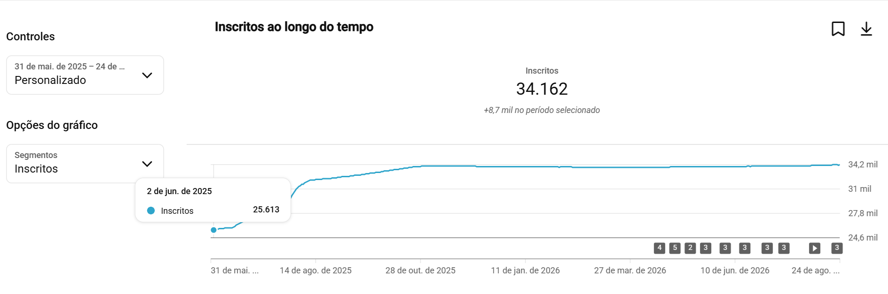
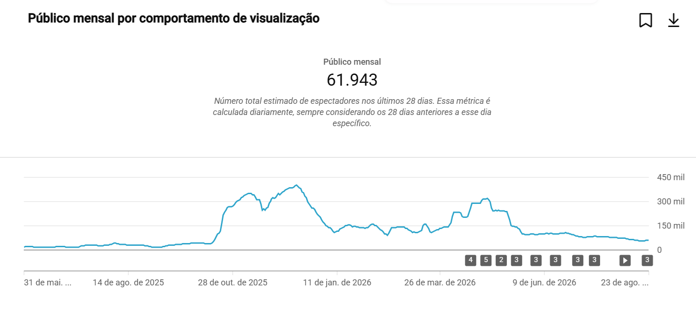
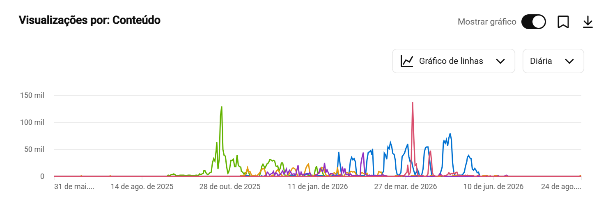

Da pergunta
ao play.
ESTRATÉGIA, ROTEIRO E SEO PARA YOUTUBE
Conteúdo sobre gestão para quem precisa tocar um negócio todos os dias.
Na vhsys, participei do planejamento do canal, da escolha de temas e da construção de roteiros alinhados ao público e aos objetivos do negócio, com foco em retenção e crescimento orgânico.
Roteiro de todos os vídeos do período em que atuei no projeto, participação no planejamento editorial e otimização com SEO para YouTube. Também participei da captação e edição de alguns vídeos.
31 de maio de 2025
a 24 de agosto de 2026
Resultado do canal, incluindo seu acervo de vídeos. A base não separa tráfego pago e orgânico; o volume não representa crescimento exclusivamente orgânico nem resultado individual.
Estimativa de espectadores nos últimos 28 dias.
Um canal em movimento.
Visualizações por mês · soma dos registros diários
Ver valores mensais
| Mês | Visualizações |
|---|---|
| mai/2025 | 734 |
| jun/2025 | 34.492 |
| jul/2025 | 47.468 |
| ago/2025 | 45.402 |
| set/2025 | 72.183 |
| out/2025 | 908.618 |
| nov/2025 | 1.048.666 |
| dez/2025 | 749.281 |
| jan/2026 | 660.899 |
| fev/2026 | 918.337 |
| mar/2026 | 1.607.692 |
| abr/2026 | 2.581.665 |
| mai/2026 | 1.226.427 |
| jun/2026 | 492.079 |
| jul/2026 | 331.325 |
| ago/2026 | 246.872 |
A distribuição de visualizações varia ao longo dos meses, com maior volume em abril de 2026. Os dados permitem observar essa evolução; não permitem atribuir os picos a uma ação específica ou a uma única pessoa.
Conteúdos em destaque
Seleção de vídeos publicados em 2025.
Visualizações registradas na exportação do canal.
Sua loja de materiais de construção lucrando mais, com o vhsys
344.078visualizações
(NFP-e) Nota Fiscal Eletrônica Produtor Rural: passo a passo fácil para começar
10.644visualizações
O que é XML da nota fiscal?
10.322visualizações
Consultar os registros do canal



Social Media.
Uma seleção dos meus trabalhos independentes de Social Media para Caballicare e Casa da Limpeza.
SOCIAL MEDIA / CABALLICARE
Caballicare
Três vídeos.
Uma seleção em formato vertical.
SOCIAL MEDIA / CASA DA LIMPEZA
Casa da
Limpeza.
Conteúdos verticais para a marca, apresentados em dois trabalhos selecionados.
conteúdoem movimento